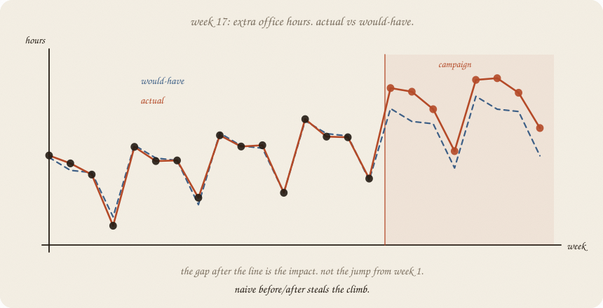
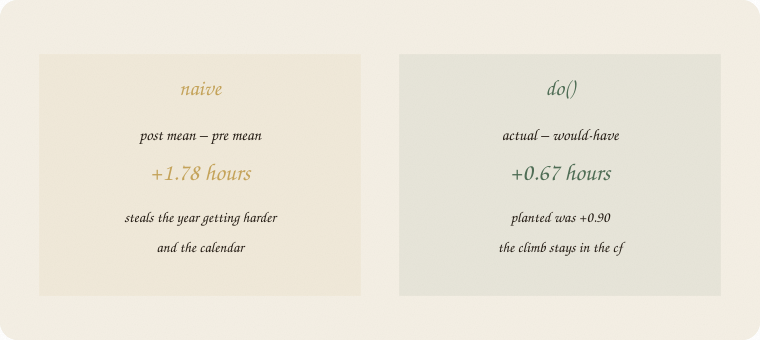
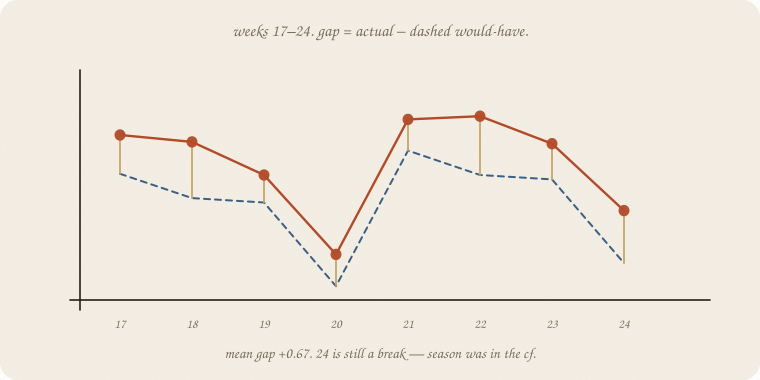
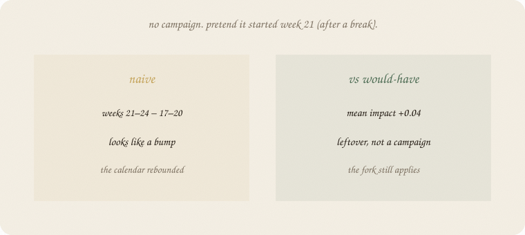
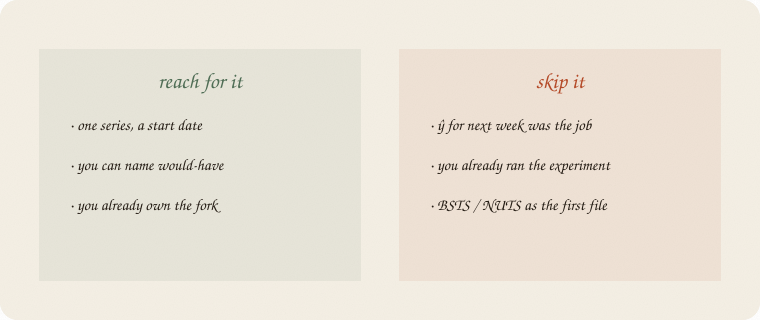

datazines · a sketchbook

Read 01 confounding and 01 lag trend season first. Same exam world: 24 weeks of hours. Week 17 they add extra office hours — a campaign. The fork still applies. BSTS is an engine for would-have. Not this file.
This is 02 of the cause wing. One series, one start date, a counterfactual. Not an A/B. Not NUTS.
Flip it like a notebook. One page = one idea. Done.
Weeks 1–16: ordinary year. Trend up, break every fourth week.
Week 17: extra office hours start. That is do(campaign). Hours after that are mixed: what the year was going to do, plus whatever the extra hours did.
The question is not “did post look higher than pre?” Pre is earlier in a climbing year. Of course post looks higher.
The question is:
after week 17, how much higher than the weeks we would have had?
Would-have is a series. Fit it on the past. Project it through the campaign. The gap is the impact.
Mean of weeks 1–16: 3.83. Mean of 17–24: 5.61. Difference +1.78.
The campaign did not add 1.78 hours. The year was already climbing. Break weeks sit in both piles and cancel badly. Naive before/after is a passenger of trend + season. Same sin as coffee-only in 01: a loud number, the wrong lever.

Planted lift (we wrote the world): +0.90. Naive almost doubled it. Pattern. Not do().
Fit the time-01 line only on weeks 1–16: week-number plus the 4-week dummies. Project weeks 17–24. That dashed line is would-have. No campaign in it.

| week | actual | would-have | gap |
|---|---|---|---|
| 17 | 6.04 | 5.42 | +0.62 |
| 18 | 5.93 | 5.03 | +0.90 |
| 19 | 5.40 | 4.96 | +0.44 |
| 20 break | 4.13 | 3.62 | +0.51 |
| 24 break | 4.83 | 3.99 | +0.84 |
Mean gap +0.67. Planted was +0.90. Short past, leftover, a sketch — not a scandal. Week 24 is still a break. Season was in the counterfactual. Naive would have called the rebound the campaign.
People call this causal impact. Ugly product name. Friendly job: gap vs a series that never saw the campaign.
No extra hours. Pretend the campaign started week 21 — right after a break. Naive: weeks 21–24 minus 17–20 looks like a bump (the calendar rebounded).
Would-have, same method: mean gap +0.04. Leftover. Not a campaign.

If your start date is a passenger of the calendar, the counterfactual should shrug. If it shouts, you forgot season — or you picked the date after seeing the spike. That is still the fork.
Bootstrap the pre leftover, 2000 bags (02 bootstrap): mean impact 0.51 to 0.82. Zero not in the pile. The fake start’s 0.04 would sit on zero. Interval, not a trophy p.
If you keep only one thing:
impact = actual − would-have. would-have never saw the campaign.
Same 24-week beat as 01 lag trend season. House seed 7. Campaign at week 17, planted +0.90. Trend + season on the past. Last-four fake start has no lift.
import numpy as np
from sklearn.linear_model import LinearRegression
rng = np.random.default_rng(7)
n = 24
t = np.arange(n, dtype=float)
season = np.array([0.8, 0.4, 0.1, -1.4] * 6)
y0 = 3.2 + 0.09 * t + season + rng.normal(0, 0.22, n)
start = 16
y = y0.copy()
y[start:] += 0.90
dummies = np.eye(4)[np.arange(n) % 4][:, :3]
X = np.column_stack([t, dummies])
m = LinearRegression().fit(X[:start], y[:start])
yhat = m.predict(X)
impact = y[start:] - yhat[start:]
print("actual", np.round(y, 2).tolist())
print("naive pre/post", round(y[:start].mean(), 2), round(y[start:].mean(), 2),
" diff", round(y[start:].mean() - y[:start].mean(), 2))
print("cf post ", np.round(yhat[start:], 2).tolist())
print("actual post", np.round(y[start:], 2).tolist())
print("week impact", np.round(impact, 2).tolist())
print("mean impact vs cf", round(impact.mean(), 2), " planted", 0.90)
fake = (y0[20:] - LinearRegression().fit(X[:20], y0[:20]).predict(X[20:])).mean()
print("fake start week 21 mean impact", round(fake, 2))
resid = y[:start] - m.predict(X[:start])
rngb = np.random.default_rng(7)
means = []
for _ in range(2000):
yb = m.predict(X[:start]) + rngb.choice(resid, start, replace=True)
mb = LinearRegression().fit(X[:start], yb)
means.append((y[start:] - mb.predict(X[start:])).mean())
means = np.array(means)
print("boot 95% mean impact", np.round(np.percentile(means, [2.5, 97.5]), 2),
" se", round(means.std(ddof=1), 2))
actual [4.0, 3.76, 3.42, 1.87, 4.26, 3.83, 3.85, 2.72, 4.61, 4.27, 4.31, 2.87, 5.1, 4.57, 4.55, 3.3, 6.04, 5.93, 5.4, 4.13, 6.29, 6.34, 5.9, 4.83]
naive pre/post 3.83 5.61 diff 1.78
cf post [5.42, 5.03, 4.96, 3.62, 5.79, 5.4, 5.33, 3.99]
actual post [6.04, 5.93, 5.4, 4.13, 6.29, 6.34, 5.9, 4.83]
week impact [0.62, 0.9, 0.44, 0.51, 0.5, 0.94, 0.57, 0.84]
mean impact vs cf 0.67 planted 0.9
fake start week 21 mean impact 0.04
boot 95% mean impact [0.51 0.82] se 0.08
Naive +1.78 steals the year. Gap vs would-have +0.67 (planted 0.90 — leftover on 16 weeks, a sketch). Fake start +0.04. Bootstrap 0.51–0.82, zero out. X[:start] is the past. The campaign never trains the dashed line.
| word | meaning |
|---|---|
| start date | when do() begins |
| would-have | series fitted on the past, projected |
| impact | actual − would-have, after the start |
| naive | post mean − pre mean (steals trend) |
| fake start | same method on a quiet date; should shrug |

Reach for it when you have one series and a start date, you can name would-have (trend + season), and you already own the fork.
Skip it when ŷ for next week was the job (01 lag trend season); you already ran the experiment; you wanted BSTS / NUTS as the first file.
Pays you: do() on a series without a second group. Naive called out. Season kept in the counterfactual so a break is not a campaign.
Costs you: would-have is a guess (here 0.67 vs 0.90). A hidden fork in time remains hidden. Picking the start after seeing the spike is still coffee-only. BSTS later, same gap.
Cause 02. Actual − would-have. Time 01 was the dashed line. Next empty 01: no-y.
Flip it like a notebook. One page = one idea.